Getting started with waveform
Mohammad Reza Seydi
Source:vignettes/getting-started.Rmd
getting-started.RmdThe waveform package generates one-dimensional waveform (functional) data. This vignette introduces the Gaussian curves, signal generators, residual-field FWHM estimation, and evaluation on a new grid.
Gaussian smoothing model
Let be a mean-zero Gaussian random process. A smoothed process can be written as its convolution with a normalized Gaussian kernel:
where
For a kernel centered at zero, . The relationship between its standard deviation and full width at half maximum is
FWHM is the full width of the Gaussian kernel at half its maximum
height. In the package, fwhm supplies this width.
Curve layout
Curve matrices in waveform use rows for evaluation
points and columns for curves. For example, gaussian_swn()
returns a matrix with num_points rows and
number_of_curves columns.
Generate smoothed Gaussian curves
Set a seed when you want reproducible random curves. The parameters
below generate five curves on a 101-point domain. mu is the
requested mean, sig is the requested standard deviation,
and fwhm is the full width at half maximum of the smoothing
kernel. Larger fwhm values produce smoother curves. Both
mu and sig can be single numbers, which apply
across the entire domain and to every curve, or vectors with one value
per evaluation point. Pointwise vectors are shared across all
curves.
set.seed(123)
generated <- gaussian_curves_generator(
sample_size = 5,
num_points = 101,
mu = 0,
sig = 1,
fwhm = 20
)
dim(generated$curves)
#> [1] 101 5For example, vectors can specify a mean and standard deviation that change across the domain:
varying_parameters <- gaussian_curves_generator(
sample_size = 5,
num_points = 101,
mu = seq(-0.5, 0.5, length.out = 101),
sig = seq(0.5, 1.5, length.out = 101),
fwhm = 20
)
dim(varying_parameters$curves)
#> [1] 101 5Plot the curves to see the generated functional data.
matplot(
x = 0:(nrow(generated$curves) - 1),
y = generated$curves,
type = "l",
lty = 1,
xlab = "Evaluation point", #can be changed to match your domain
ylab = "Value",
main = "Smoothed Gaussian curves"
)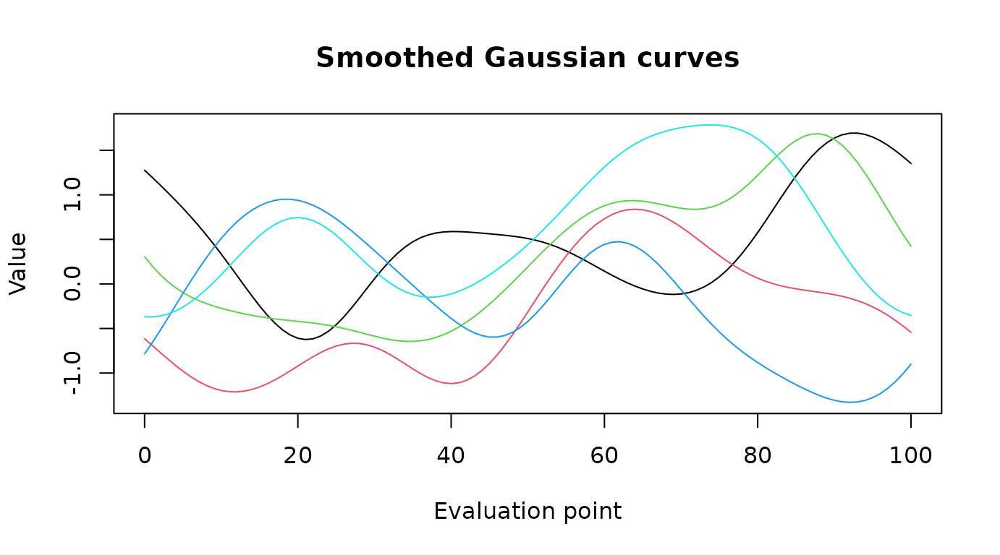
Compare smoothness on the same noise
To isolate the effect of fwhm, generate white noise once
and pass the same matrix to smooth_gaussian_curves() for
each smoothing level. fwhm must be a positive finite
number. Use gaussian_swn() directly to get unsmoothed
curves; smooth_gaussian_curves() does not accept
fwhm = 0. As fwhm becomes very large relative
to the domain, the smoothed curves approach constant curves.
set.seed(123)
noise <- gaussian_swn(number_of_curves = 3, num_points = 101)
less_smooth <- smooth_gaussian_curves(noise, mu = 0, sig = 1, fwhm = 5)
more_smooth <- smooth_gaussian_curves(noise, mu = 0, sig = 1, fwhm = 20)
par(mfrow = c(1, 2))
matplot(less_smooth, type = "l", lty = 1, main = "FWHM = 5",
xlab = "Evaluation point", ylab = "Value")
matplot(more_smooth, type = "l", lty = 1, main = "FWHM = 20",
xlab = "Evaluation point", ylab = "Value")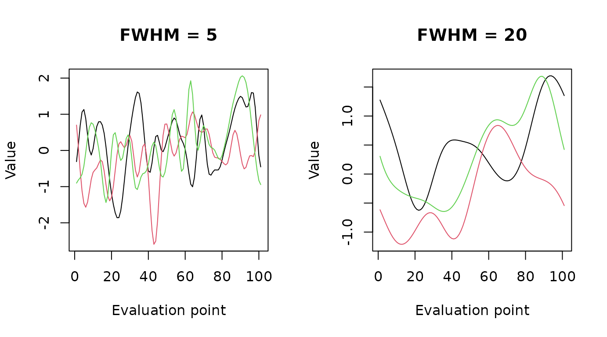
Create signal shapes
gaussian_signal(), sin_signal(), and
cos_signal() return signal values with their domain.
square_signal() returns a vector on the same zero-based
domain. These signals can be plotted or combined with other curves.
gaussian <- gaussian_signal(
center = 50, amplitude = 2, sfwhm = 12, num_points = 101
)
sine <- sin_signal(
num_points = 101, amplitude = 1, frequency = 0.03, phase = 0, offset = 0
)
cosine <- cos_signal(
num_points = 101, amplitude = 1, frequency = 0.03, phase = 0, offset = 0
)
square <- square_signal(
start_end_signal = c(20, 60), start_height = 0,
signal_height = 1, num_points = 101
)
signal_matrix <- cbind(
Gaussian = gaussian$signal_values,
Sine = sine$signal_values,
Cosine = cosine$signal_values,
Square = square
)
matplot(gaussian$domain, signal_matrix, type = "l", lty = 1:4,
xlab = "Evaluation point", ylab = "Value", main = "Signal shapes")
legend("topright", legend = colnames(signal_matrix), lty = 1:4)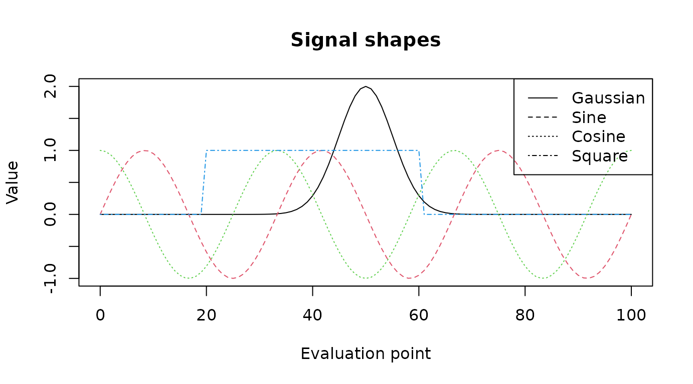
Estimate smoothness
estimate_fwhm() estimates residual-field smoothness. For
observations
in group
,
the residual functions are
where , , and is the estimated group mean function. At each point, the residual and derivative sums of squares are
The local derivative ratio and local FWHM are
The implementation approximates derivatives with finite differences on a unit-spaced domain. It reports the global estimate as the reciprocal of the mean resels per node:
where
contains points with nonzero residual sum of squares. Residual
smoothness is relevant to inference on one-dimensional trajectories; see
Pataky, Vanrenterghem, and Robinson (2016) (Pataky et al. 2016). For one group,
estimate_fwhm() centers the supplied curves pointwise. For
multiple groups, provide residual curves after centering within each
group.
estimated_fwhm <- estimate_fwhm(R = generated$curves)
estimated_fwhm
#> [1] 17.46428Change the evaluation grid
dense_data() fits the curves with an fda
B-spline basis and evaluates them on a new grid. The new grid can have
more or fewer points than the input grid.
dense_200 <- dense_data(data = generated$curves, num_evaluation = 200)
dense_50 <- dense_data(data = generated$curves, num_evaluation = 50)
dim(dense_200)
#> [1] 200 5
dim(dense_50)
#> [1] 50 5Each output is evaluated across the same domain as the original curves. The following figure compares the original, 200-point, and 50-point evaluation grids in three vertically stacked panels. Each panel shows all five curves over the same domain and uses the same vertical scale.
domain_original <- seq(
from = 0,
to = nrow(generated$curves) - 1,
length.out = nrow(generated$curves)
)
domain_200 <- seq(
from = 0,
to = nrow(generated$curves) - 1,
length.out = nrow(dense_200)
)
domain_50 <- seq(
from = 0,
to = nrow(generated$curves) - 1,
length.out = nrow(dense_50)
)
curve_colors <- grDevices::hcl.colors(ncol(generated$curves), "Dark 3")
plot_ylim <- range(generated$curves, dense_200, dense_50)
par(mfrow = c(3, 1), mar = c(2.5, 4, 2, 1))
matplot(domain_original, generated$curves, type = "b", pch = 16, cex = 0.5,
lty = 1, col = curve_colors, xlim = range(domain_original),
ylim = plot_ylim, xlab = "", ylab = "Value",
main = "Original: 101 points")
matplot(domain_200, dense_200, type = "l", lty = 1,
col = curve_colors, xlim = range(domain_original),
ylim = plot_ylim, xlab = "", ylab = "Value",
main = "Dense: 200 points")
matplot(domain_50, dense_50, type = "l", lty = 1,
col = curve_colors, xlim = range(domain_original),
ylim = plot_ylim, xlab = "Evaluation point", ylab = "Value",
main = "Sparse: 50 points")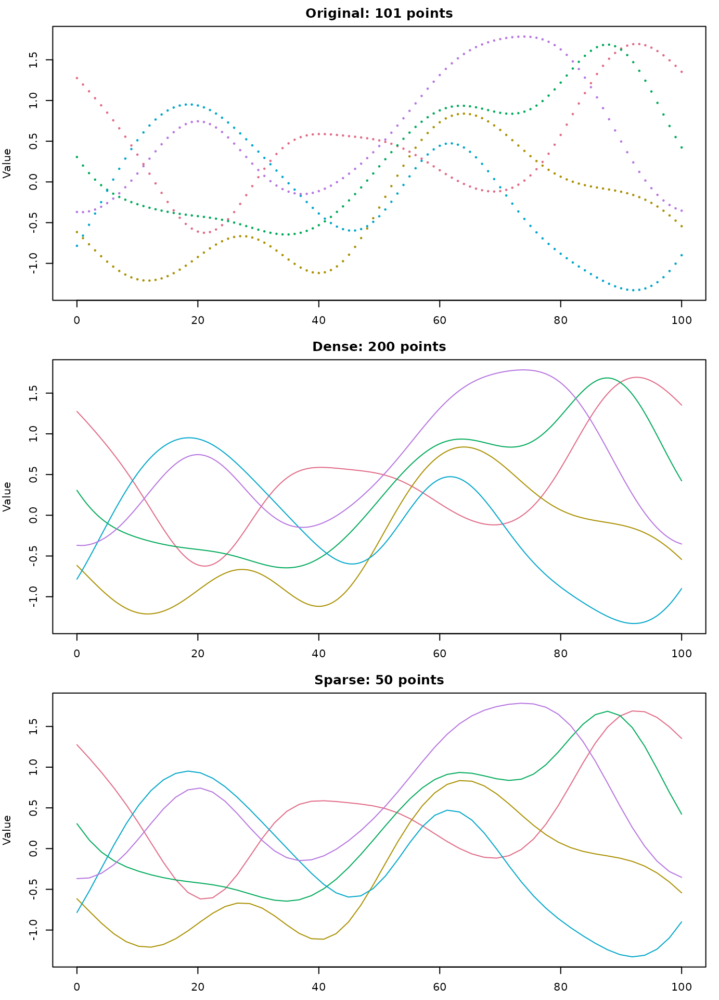
Practical example: simulation studies
The following studies illustrate applications in which functional trajectories are analyzed or simulated under different signal and noise characteristics:
- Seydi et al.’s sample-size study uses medical waveforms and simulations that vary noise characteristics and mean-difference patterns (Seydi, Strandberg, et al. 2026).
- Their power study examines how noise smoothness and effect-trajectory characteristics influence statistical power for biomechanical trajectories (Seydi, Pataky, et al. 2026).
Build a two-group simulation step by step
A general two-group simulation can be written as
where is a baseline signal, is the group-specific effect, and is random noise. The signal shape, effect pattern, noise standard deviation, and noise FWHM can each be varied to build different scenarios.
Step 1: Create the baseline signal
Combine a Gaussian peak and a low-amplitude sine component to define a baseline waveform.
practical_num_points <- 101
practical_domain <- seq(0, practical_num_points - 1)
baseline_peak <- gaussian_signal(
center = 45, amplitude = 2, sfwhm = 16,
num_points = practical_num_points
)
baseline_oscillation <- sin_signal(
num_points = practical_num_points,
amplitude = 0.25, frequency = 0.02, phase = 0, offset = 0
)
baseline_signal <- baseline_peak$signal_values +
baseline_oscillation$signal_values
plot(practical_domain, baseline_signal, type = "l", lwd = 2,
xlab = "Evaluation point", ylab = "Signal",
main = "Step 1: Baseline signal")Step 2: Define a group effect
Use a square signal to represent an effect that is active only over a selected part of the domain. Plot the two group means before adding noise.
group_effect <- square_signal(
start_end_signal = c(35, 65), start_height = 0,
signal_height = 0.8, num_points = practical_num_points
)
group1_mean <- baseline_signal
group2_mean <- baseline_signal + group_effect
matplot(practical_domain, cbind(Control = group1_mean, Effect = group2_mean),
type = "l", lty = 1:2, lwd = 2, col = c("steelblue", "firebrick"),
xlab = "Evaluation point", ylab = "Mean signal",
main = "Step 2: Group means and effect")
legend("topright", legend = c("Control", "Effect group"),
col = c("steelblue", "firebrick"), lty = 1:2, lwd = 2, bty = "n")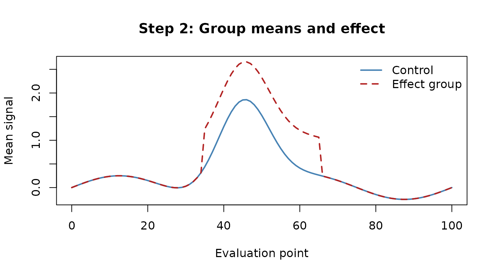
Step 3: Generate unsmoothed noise
Generate five independent noise curves for each group and plot the raw white noise before smoothing.
set.seed(321)
practical_sample_size <- 5
raw_noise <- gaussian_swn(
number_of_curves = 2 * practical_sample_size,
num_points = practical_num_points
)
matplot(practical_domain, raw_noise, type = "l", lty = 1,
col = "grey55", xlab = "Evaluation point", ylab = "Noise",
main = "Step 3: Unsmoothed Gaussian noise")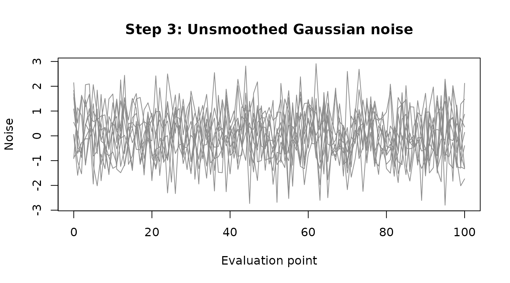
Step 4: Smooth and scale the noise
Apply the same smoothing FWHM and standard deviation to each noise curve.
smooth_noise <- smooth_gaussian_curves(
data = raw_noise, mu = 0, sig = 0.4, fwhm = 8
)
matplot(practical_domain, smooth_noise, type = "l", lty = 1,
col = "grey45", xlab = "Evaluation point", ylab = "Noise",
main = "Step 4: Smoothed Gaussian noise (FWHM = 8)")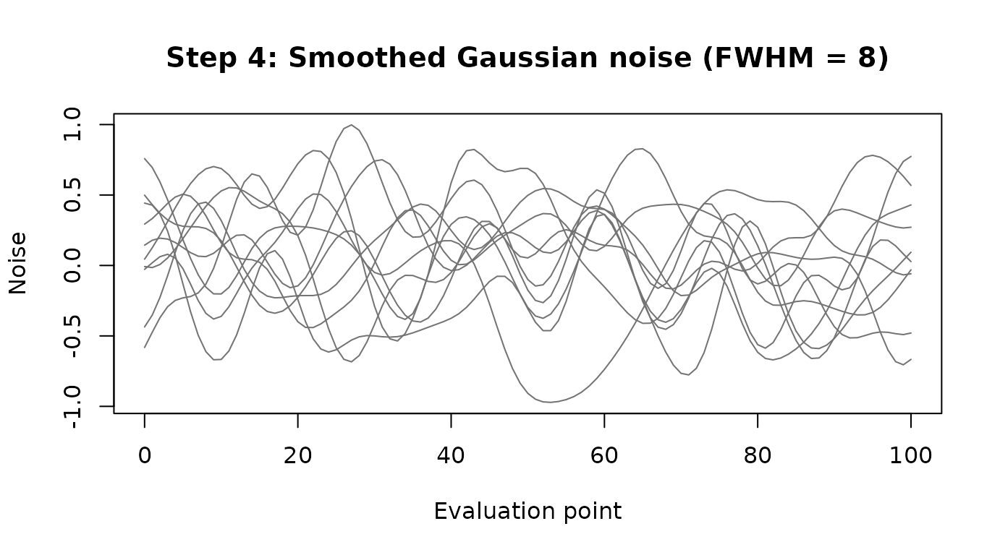
Alternative: generate smoothed noise directly
This call combines Gaussian noise generation and smoothing in one
step. It returns a list, so use its $curves component for
matrix operations. This alternative replaces Steps 3 and 4; Step 5 uses
this matrix below.
generated_smooth_noise <- gaussian_curves_generator(
sample_size = 2 * practical_sample_size,
num_points = practical_num_points,
mu = 0,
sig = 0.4,
fwhm = 8
)
smooth_noise <- generated_smooth_noise$curves
matplot(practical_domain, smooth_noise, type = "l", lty = 1,
col = "grey45", xlab = "Evaluation point", ylab = "Noise",
main = "Smoothed Gaussian noise (FWHM = 8)")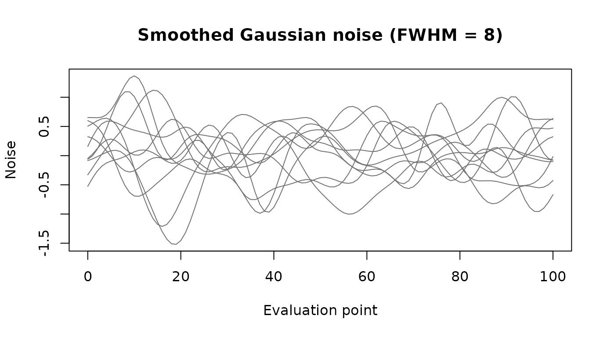
Step 5: Add noise to the group signals
Combine the signals and smoothed noise to obtain the simulated data matrix. Rows are evaluation points and columns are curves.
group1_columns <- seq_len(practical_sample_size)
group2_columns <- practical_sample_size + seq_len(practical_sample_size)
group1_data <- sweep(
smooth_noise[, group1_columns, drop = FALSE], 1, group1_mean, "+"
)
group2_data <- sweep(
smooth_noise[, group2_columns, drop = FALSE], 1, group2_mean, "+"
)
simulated_data <- cbind(group1_data, group2_data)
plot(NA, xlim = range(practical_domain),
ylim = range(simulated_data, group1_mean, group2_mean),
xlab = "Evaluation point", ylab = "Observed value",
main = "Step 5: Simulated functional data")
matlines(practical_domain, group1_data, col = "steelblue", lty = 1)
matlines(practical_domain, group2_data, col = "firebrick", lty = 1)
lines(practical_domain, group1_mean, col = "navy", lwd = 3)
lines(practical_domain, group2_mean, col = "darkred", lwd = 3)
legend("topright",
legend = c("Control curves", "Effect-group curves",
"Control mean", "Effect-group mean"),
col = c("steelblue", "firebrick", "navy", "darkred"),
lty = 1, lwd = c(1, 1, 3, 3), bty = "n")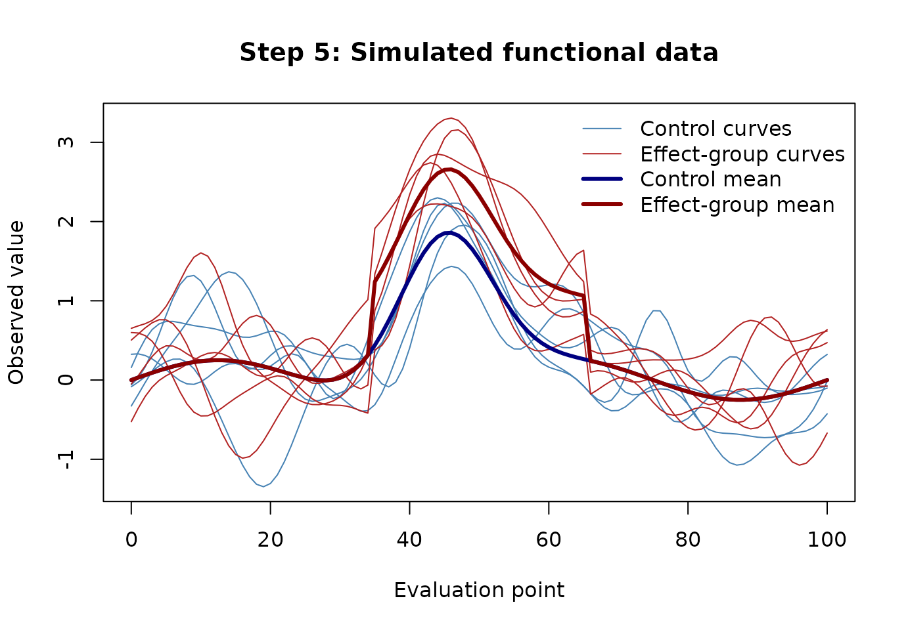
The resulting simulated_data matrix can be passed to
downstream functional analyses.
Example data: thorax obliquity during walking
The package includes two sets of functional curves describing thorax
obliquity (upward and downward trunk motion) during walking:
male contains curves from 65 male participants and
female contains curves from 71 female participants. Both
matrices have 101 rows, representing the common evaluation grid, and one
column per participant. These data come from the publicly available
full-body gait dataset described by Van Criekinge et al. (2023) (Van Criekinge et al.
2023). See ?male and ?female for
details and the source.
The following plot overlays all participant curves, using color to distinguish the two groups. The horizontal axis indexes the 101 points on the common grid.
data("male", package = "waveform")
data("female", package = "waveform")
evaluation_grid <- seq(0, 100, length.out = 101)
male_color <- grDevices::adjustcolor("#2878B5", alpha.f = 0.35)
female_color <- grDevices::adjustcolor("#D1495B", alpha.f = 0.35)
matplot(
x = evaluation_grid,
y = male,
type = "l",
lty = 1,
col = male_color,
xlab = "Evaluation point",
ylab = "Thorax obliquity",
main = "Thorax obliquity curves by participant"
)
matlines(
x = evaluation_grid,
y = female,
type = "l",
lty = 1,
col = female_color
)
legend(
"topright",
legend = c("Male participants", "Female participants"),
col = c("#2878B5", "#D1495B"),
lty = 1,
lwd = 2,
bty = "n"
)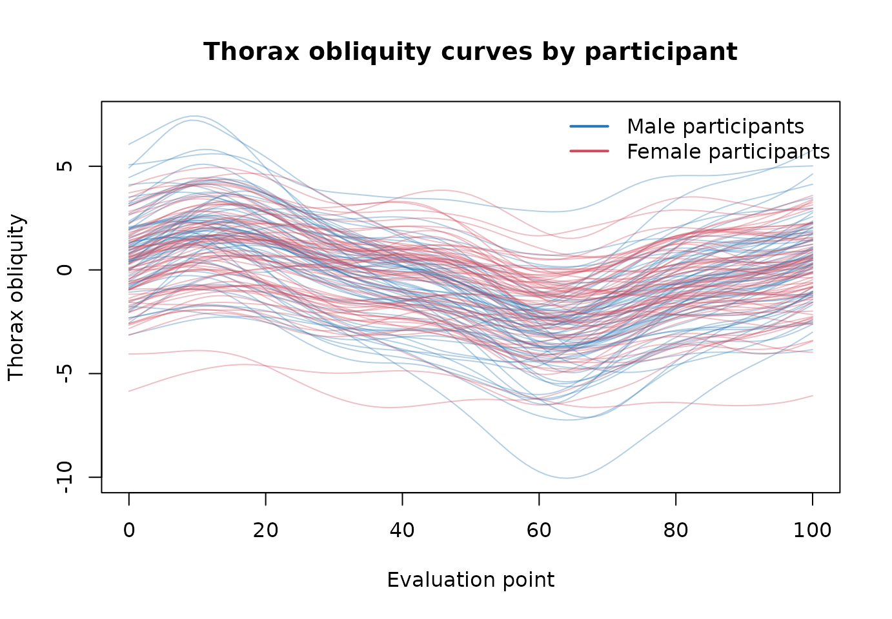
These observed curves provide an example of the kind of functional data we want to represent with simulations. The package’s generators let us create curves with controlled signals, noise, and smoothness so that simulated data can reflect key characteristics of these original data.
Practical example: simulation based on real data
In this section, we want to simulate thorax data that reflect the key characteristics of these original data for male and female.
Step 1: Estimate the parameters
First, estimate each group’s mean function and subtract it from the observed curves to obtain residuals. Estimate the residual FWHM and the pointwise residual standard deviation separately for each group.
residuals_male <- sweep(male, 1, rowMeans(male), FUN = "-")
residuals_female <- sweep(female, 1, rowMeans(female), FUN = "-")
fwhm_male <- estimate_fwhm(residuals_male)
fwhm_female <- estimate_fwhm(residuals_female)
fwhm_male
#> [1] 47.08095
fwhm_female
#> [1] 59.08177
sd_male <- apply(residuals_male, 1, sd)
sd_female <- apply(residuals_female, 1, sd)
mean_male <- rowMeans(male)
mean_female <- rowMeans(female)The left panel shows the group mean functions. The right panel shows the within-group residual functions after subtracting those means.
par(mfrow = c(1, 2), mar = c(4, 4, 3, 1))
matplot(
evaluation_grid, cbind(Male = mean_male, Female = mean_female),
type = "l", lty = 1, lwd = 2, col = c("#2878B5", "#D1495B"),
xlab = "Evaluation point", ylab = "Mean thorax obliquity",
main = "Estimated group means"
)
legend("topright", legend = c("Male", "Female"),
col = c("#2878B5", "#D1495B"), lty = 1, lwd = 2, bty = "n")
plot(
NA, xlim = range(evaluation_grid),
ylim = range(residuals_male, residuals_female),
xlab = "Evaluation point", ylab = "Residual thorax obliquity",
main = "Residual functions"
)
matlines(evaluation_grid, residuals_male, col =
grDevices::adjustcolor("#2878B5", alpha.f = 0.18), lty = 1)
matlines(evaluation_grid, residuals_female, col =
grDevices::adjustcolor("#D1495B", alpha.f = 0.18), lty = 1)
legend("topright", legend = c("Male", "Female"),
col = c("#2878B5", "#D1495B"), lty = 1, lwd = 2, bty = "n")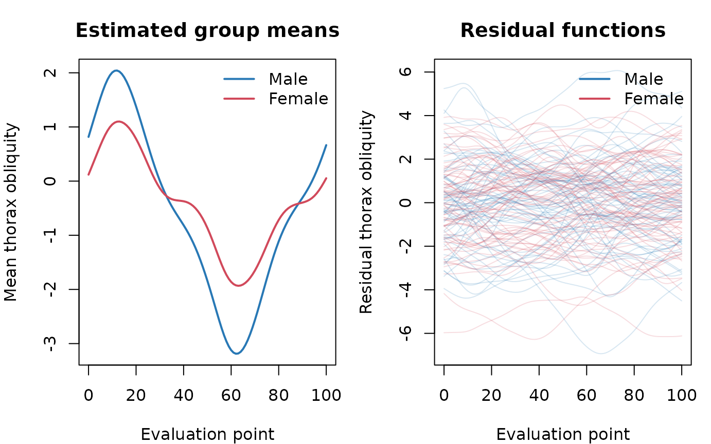
Step 2: Simulation model
Consider
where is the group-specific mean functions, and is random noise for individual . Here, denotes the sample size.
Step 3: Generate noise functions
Generate 20 curves per group. The estimated pointwise residual
standard deviations are passed as sig, and each group’s
estimated residual FWHM is passed as fwhm. A fixed seed
makes the simulated noise reproducible.
set.seed(12345)
n <- 20
num_point_domain <- nrow(male)
noise_male <- gaussian_curves_generator(
sample_size = n, num_points = num_point_domain,
mu = 0, sig = sd_male, fwhm = fwhm_male
)
noise_female <- gaussian_curves_generator(
sample_size = n, num_points = num_point_domain,
mu = 0, sig = sd_female, fwhm = fwhm_female
)The generated noise curves use the estimated smoothness and pointwise variability for each group.
par(mfrow = c(1, 2), mar = c(4, 4, 3, 1))
matplot(
evaluation_grid, noise_male$curves, type = "l", lty = 1,
col = grDevices::adjustcolor("#2878B5", alpha.f = 0.6),
xlab = "Evaluation point", ylab = "Noise", main = "Male noise curves"
)
abline(h = 0, col = "grey50", lty = 2)
matplot(
evaluation_grid, noise_female$curves, type = "l", lty = 1,
col = grDevices::adjustcolor("#D1495B", alpha.f = 0.6),
xlab = "Evaluation point", ylab = "Noise", main = "Female noise curves"
)
abline(h = 0, col = "grey50", lty = 2)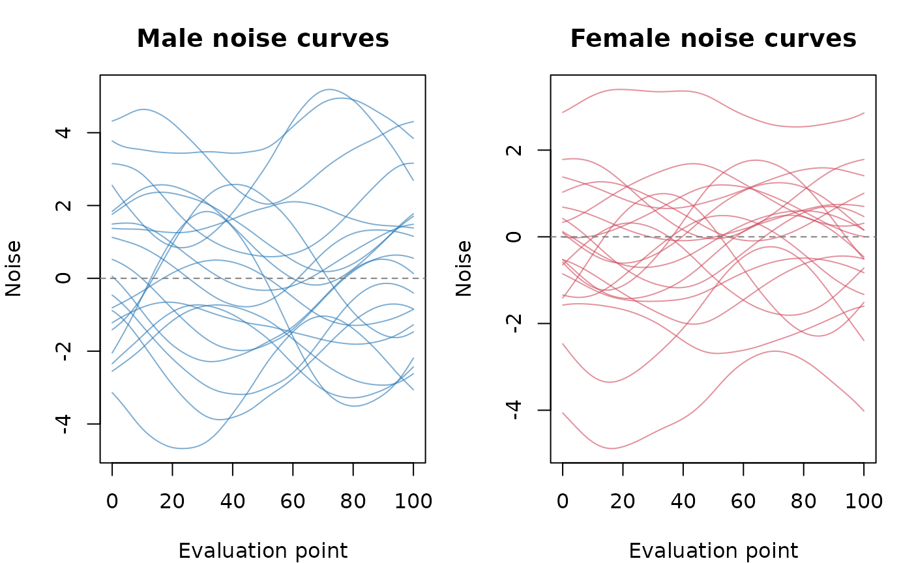
Step 4: Simulate observations
Add each simulated noise curve to its group’s estimated mean function. The resulting matrices have evaluation points in rows and simulated participants in columns.
Step 5: Compare original and simulated data
The two panels below show the original participant curves and the simulated curves, respectively. Both panels use the same domain and vertical scale; color distinguishes the male and female groups.
comparison_ylim <- range(male, female, simulated_male, simulated_female)
male_color <- grDevices::adjustcolor("#2878B5", alpha.f = 0.25)
female_color <- grDevices::adjustcolor("#D1495B", alpha.f = 0.25)
par(mfrow = c(1, 2), mar = c(4, 4, 3, 1))
plot(
NA, xlim = range(evaluation_grid), ylim = comparison_ylim,
xlab = "Evaluation point", ylab = "Thorax obliquity",
main = "Original data"
)
matlines(evaluation_grid, male, col = male_color, lty = 1)
matlines(evaluation_grid, female, col = female_color, lty = 1)
legend("topright", legend = c("Male", "Female"),
col = c("#2878B5", "#D1495B"), lty = 1, lwd = 2, bty = "n")
plot(
NA, xlim = range(evaluation_grid), ylim = comparison_ylim,
xlab = "Evaluation point", ylab = "Thorax obliquity",
main = "Simulated data (n = 20)"
)
matlines(evaluation_grid, simulated_male, col = male_color, lty = 1)
matlines(evaluation_grid, simulated_female, col = female_color, lty = 1)
legend("topright", legend = c("Male curves", "Female curves"),
col = c("#2878B5", "#D1495B"), lty = 1, lwd = 2, bty = "n")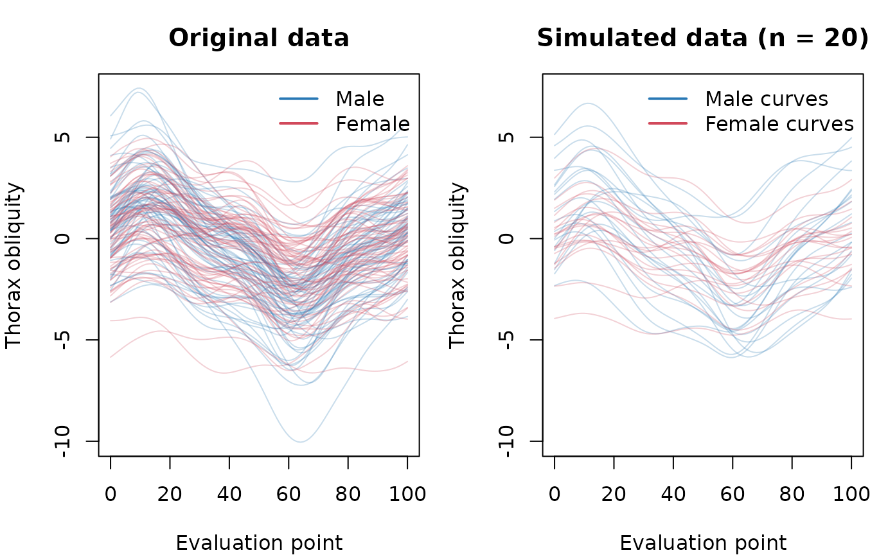
This simulation matches the observed group means, pointwise residual standard deviations, and estimated residual FWHM.
Further information
See the function help pages for argument details and additional
examples, for example ?gaussian_curves_generator,
?estimate_fwhm, and ?dense_data.